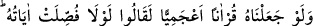
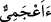
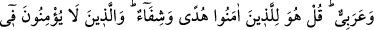
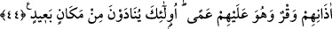

sana ve düşmanlarına da aynı muâmele yapılacaktır. Âyette aynı zamanda evliyânın,
Allah dostları ve Allah’ın has kullarının hâline de işaret edilmektedir.
Şöyle ki; bunlar Allah dostları olarak peygamberlerin vârisleridir. Bunların da
düşmanları ve haksız yere bunlara dil uzatıp deli, câhil vs. diyen hasûd kimseler vardır.
Fakat bu Allah dostları, bütün bu eziyet ve işkencelere katlanıp muradlarına ermiş ve
bunu başarmışlardır. Nihâyet peygamberler de sabırla zafer elde etmişlerdir. Başka bir
âyette
şöyle
buyrulmaktadır:
“Senden
önce
de
elçiler
yalanlanmıştı.
Yalanlanmalarına ve eziyet edilmelerine sabrettiler. Nihâyet onlara yardımımız
yetişti.” (el-En’âm, 6/34). Sonunda kavim helak edildi. Yahut peygamberin dâvetine
icâbet etti. Yahut bâtınî ve mânevî bir yardım geldi de ilâhî ahlâkla ahlâklanıp
sabrettiler. Şüphesiz sabır, güzel bir yardımdır. Çünkü maksûd ancak sabırla elde edilir.
Mesnevî’de şöyle denilmektedir:
Çocuğun daha küçük iken onu eğit,
Ara sıra azarla, iyi şeyler için mükâfat, kötü şeyler için korku ver.
Öğretmenin cevrini çekmeyen çocuk,
Daha sonra çok cefâ çeker.
İşte bu sabır sâyesinde insan bulunduğu halden daha güzel bir duruma geçmektedir.
Nihâyet bakır mâdeni de iksirle işlenip altın, gümüş olmaktadır. Âyet-i kerîme şöyle bir
husûsu daha ortaya koymaktadır; insanların bir biri aleyhine konuşmamaları matlûb olan
hikmet değildir. Şu göz ardı edilmemelidir. Allah Teâlâ kendi Zât-ı kerîmi hakkında
aleyhte konuşmayı bile ortadan kaldırmamıştır. Öyle ki “Allah’ın eşi ve evlâdı var” vb.
sözleri sarf ediyorlar. Allah hakkında durum böyle ise ya peygamberler, rasuller, evliyâ
ve mukarreb elbette bu gibi durumlara muhatab olacaklardır. Ateş dünyada kıyâmete
kadar devam edecektir. Ancak İbrâhîm (a.s)’da ve daha başka Allah’ın has kullarında
olduğu gibi, zaman zaman ateşin yakma kabiliyeti kaldırılacaktır.
Bütün belâ ve musîbetler ateş gibidir. İnsanın gönlünü yakar kavurur. Evliyânın
karınları ve sıddîkların gönülleri bu ateşte yanmaz. Ateş de Allah’ın hükmüne tâbidir.
Allah’ın kazâ ve kaderine inanan, îtiraz ve darlıktan kurtulur. Büyük Allah dostlarının
durumu budur. Çok ziyâde bağışlayıcı Allah’ın bizi cehennem ateşinden kurtarmasını
isteriz.